Gopher Go, made simple.
This is your step-by-step guide to earning on Gopher Go, the app for local workers. Set up once, choose the work you want, and take only the jobs that suit you. Customers pay through Gopher, and your pay goes straight to your debit card.
Sign in
Gopher is passwordless, so there's nothing to remember. You sign in with your mobile number and a 6-digit code we text you. New workers start on the same screen.
- Open Gopher Go. Under Sign in or sign up with your number, enter your 10-digit mobile number.
- Tick I agree to the SMS disclaimer & Terms. and tap Send verification code.
- On Check your texts., enter the 6-digit code and tap Verify Code. If you've been here before, you land on Home. If the number is new, sign-up starts (see the next section).
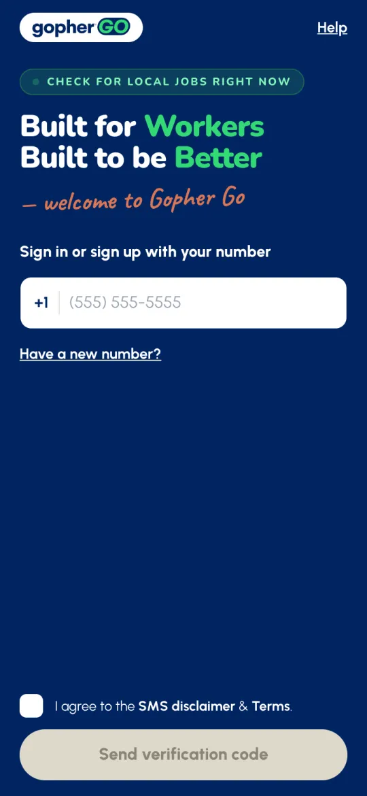
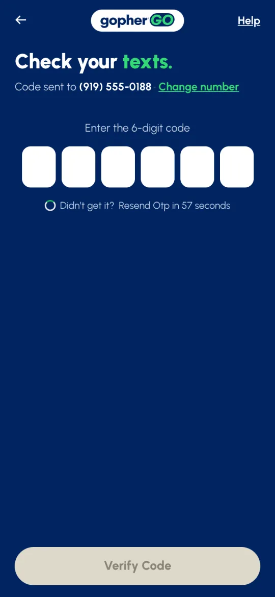
Create your account
There's no separate sign-up button. A new number goes straight into a short set-up, one question per screen, counted Step 1 of 8 to Step 8 of 8:
- Your name. Use your legal name. It's also used to verify your identity with Stripe when you set up your payouts.
- Your birthday. You need to be at least 16 to join. If you're 16 or 17, a parent or guardian has to accept the Terms for you and co-sign your payout account (Terms of Service §9).
- Your email, typed twice.
- Your address. Tap Use my current location or enter it.
- How did you discover Gopher? If someone referred you, choose Referral and enter their Gopher ID in Referrer ID (optional). If you joined from someone's invite, it's filled in for you.
- Your photo. This one is required. Customers see it when you accept their request, so they know who's coming.
- Look good? Check everything and tap Confirm Account →.
- Check your email. Enter the code we email you.
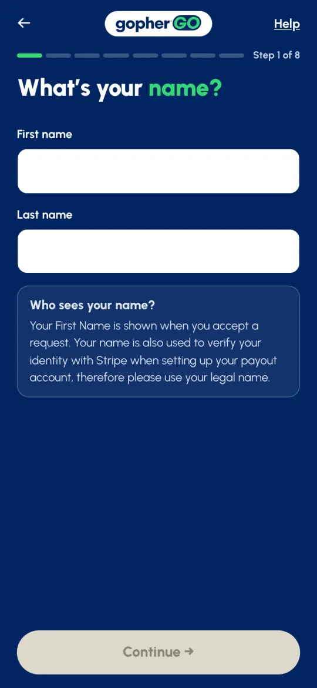
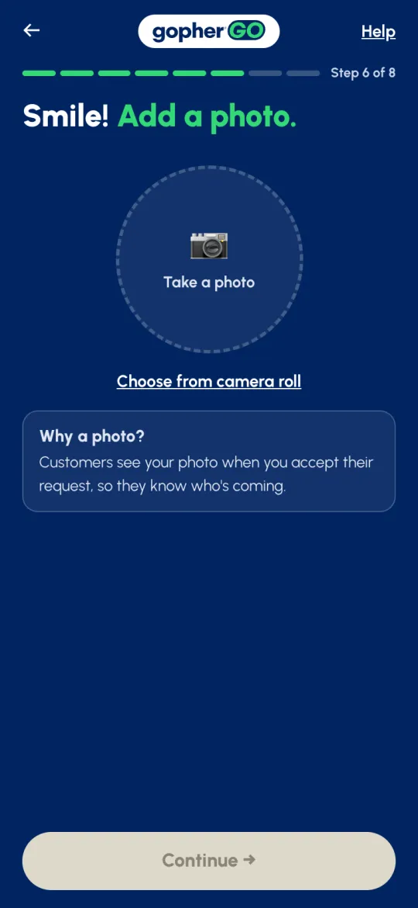
Set up to work
One Gopher account works in both apps, so the next screen says You're set up for both apps. Before you can see or take requests in Gopher Go, there are six more steps, counted Set up to work · 1 of 6 to 6 of 6:
- Skills bio Recommended. What you do, your years of experience and the tools you bring. A preview shows how customers see you.
- Ride share info Optional. Only if you want to give rides: your car and driver details, plus your insurance carrier and policy number. Rides stay locked in your work choices until this is done.
- Register a business Optional. If you work as a business: your business name, logo and details.
- Work preferences Required. The kinds of work you want (see Work settings & radius).
- Payout account Required. Your details for Stripe, then your debit card (see Payout account).
- Best practices Required. Eleven short rules. Tick each one, then tap Understood & Ready To Go!.
Last, Almost ready to work! asks you to turn on location. Gopher Go uses it to find requests near you, even when the app is closed.
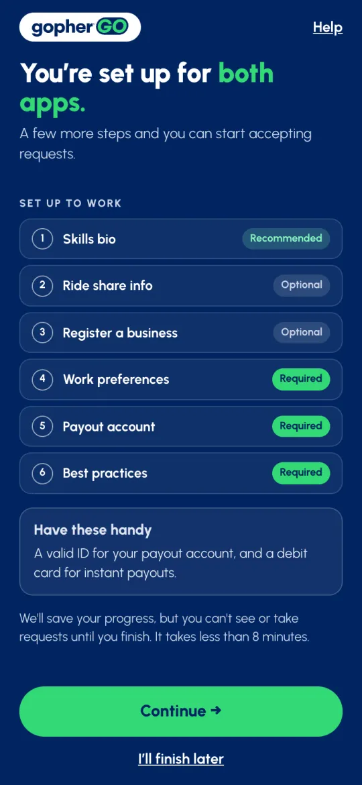
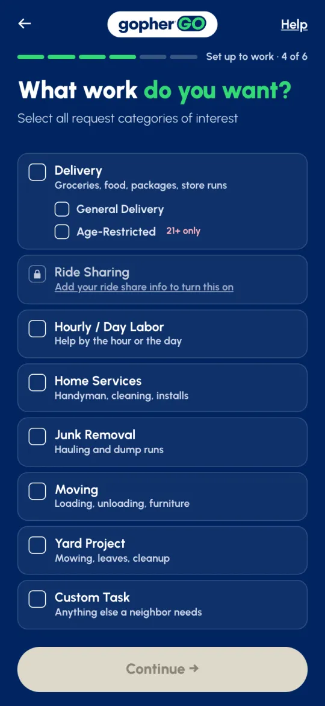
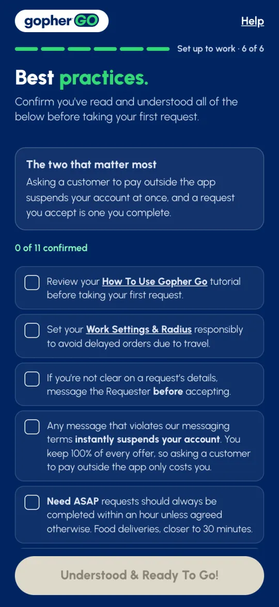
Find your way around
The app has five tabs on a floating bar at the bottom of the screen: Account · Inbox · GO · Refer · More. The big green GO in the middle takes you to Home, or straight back to a job you're working on. A red number on Inbox means unread messages; on Account, it means your payout card needs attention.
Home, top to bottom
- ↻ Refresh at the top right. Home also refreshes itself every few seconds.
- Welcome back, with Gopher Pro or Gopher Pro+ under your name if you have a tier (see Gopher Pro & Pro+).
- …ask iQ: tap Ask Gopher anything… for quick answers about the app.
- Three tabs, each with a count: Active (jobs you're working on), Scheduled (jobs you've accepted for later) and Available (jobs you can take, under Available near you).
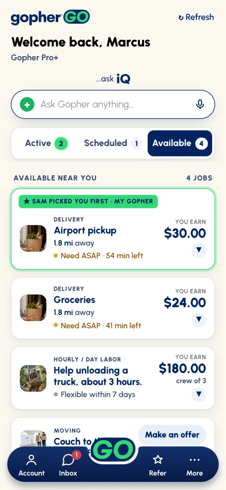
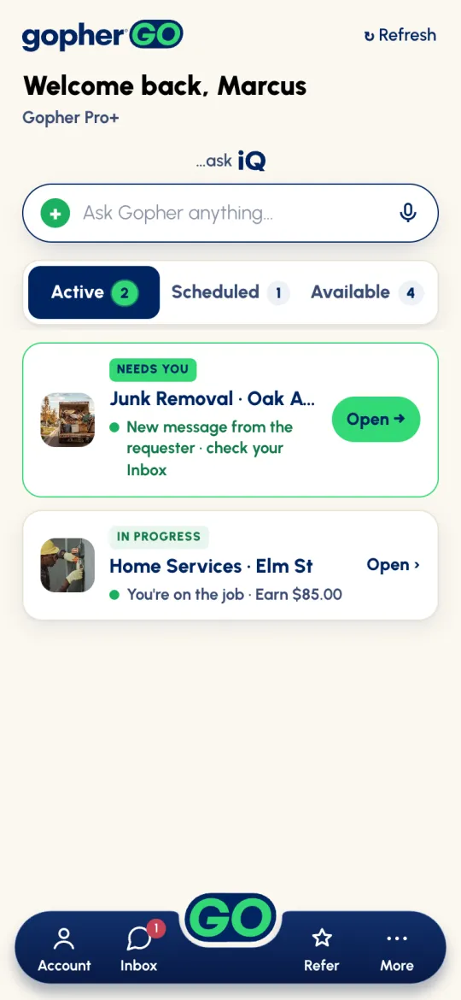
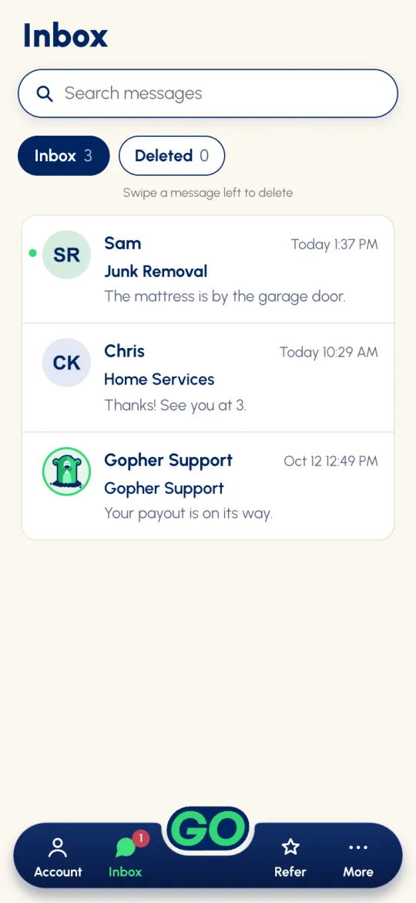
In Inbox, swipe a message left to delete it. Deleted messages clear themselves after 90 days.
Your profile
Tap Account for your profile card, Request History and Payout Account. If you don't have a tier yet, there's also Become A Gopher Pro.
My Profile
Tap your profile card to open My Profile. It shows your Gopher ID (the number someone you refer enters at sign-up), your personal info, your stats, and your verification status, including whether Stripe pays you at standard or instant speed. Tap your photo to change it. Email, Address and Source have an Edit (or Add) link.
Edit opens Personal Info. There you can also write About you (up to 150 characters), turn on Offer ride sharing and add your car and driver details, or Register your legal business with your business name, logo, address, credentials and a short description. Your name, date of birth and phone can't be changed here.
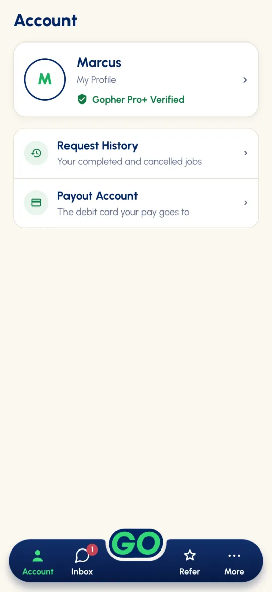
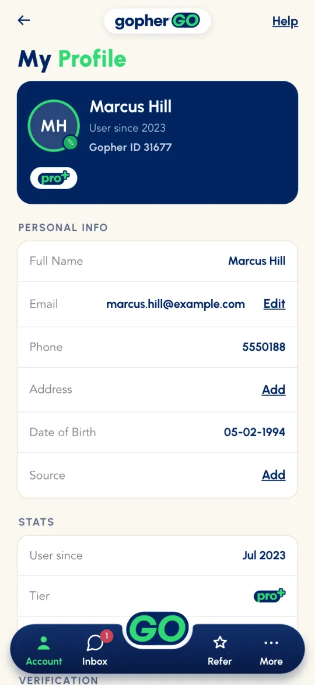
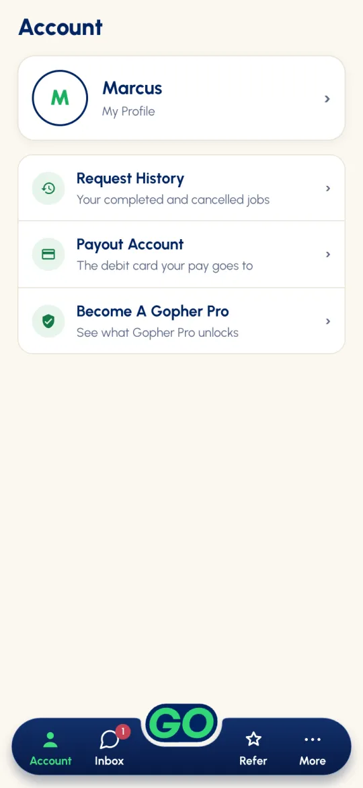
Your payout account
Gopher pays you through Stripe, our payment partner, to a debit card. There are no fees to get paid. You set this up during sign-up:
- Set up your payouts. Your SSN, your payout address (or Same as my home address), your ID type with photos of the front and back, and Stripe's terms. Stripe uses these to verify you.
- Where should we pay you? Your debit card number, expiry and code, a name for the card, and Set as default. Tap Add card & continue →.
You can browse Available without a payout account, but you can't open a job or accept it until yours is ready. If Stripe is still checking your details, the app says Payout Account pending…. There's nothing for you to do: you can open and accept requests as soon as it's ready.
Later, Account → Payout Account shows Where you get paid.: your default card on top and any Other cards under it. Tap Add a debit card to add another.
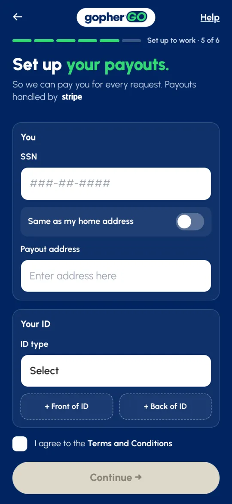
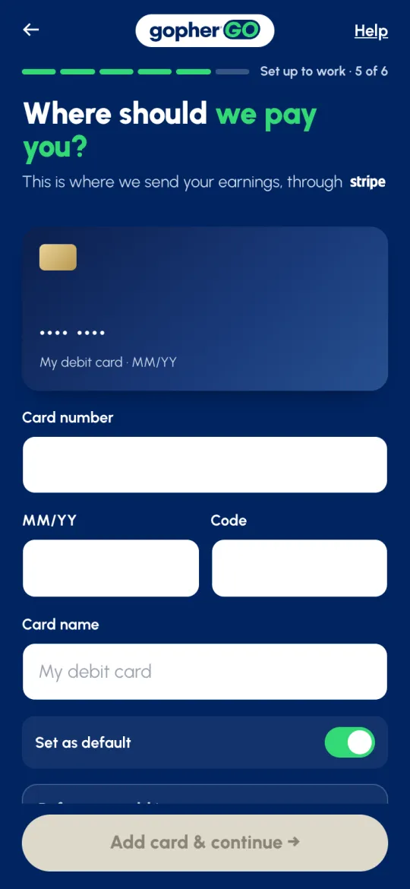
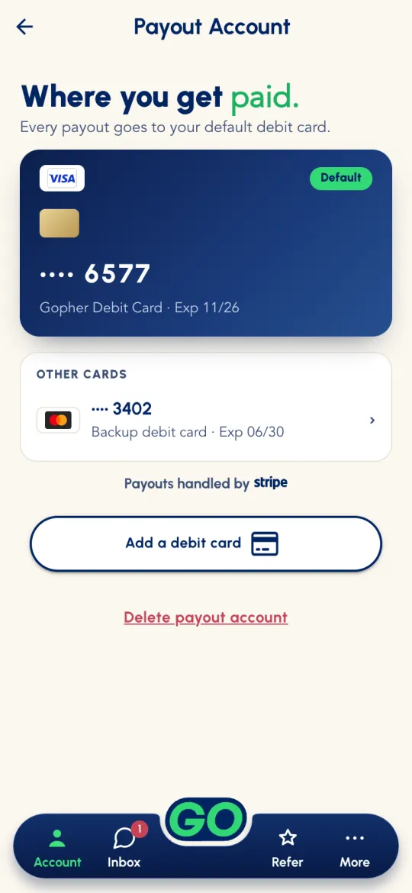
Work settings & radius
Tell Gopher Go what you want to do and how far you'll travel. Open More → Work Settings & Radius, tick the work you want, set your distance and tap Save. You're only alerted about requests in the work you ticked. Every 90 days, the app asks you to check them again.

- Delivery has two kinds: General Delivery and Age-Restricted (21+ only). Ticking Delivery ticks both. A / in the box means you've ticked one of them, and you still get Delivery jobs of that kind.
- How far will you go? Anywhere from 1 to 50 miles. It's the same range for every worker, and it starts at 25. It's measured from where you are when a request comes in, not from a fixed home base, so the work finds you wherever you are.
- Under 21? You never see age-restricted jobs, whatever you tick.
- Need a Ride: to accept a ride, your car and driver details have to be complete in My Profile. If they aren't, the app says Add your car first.
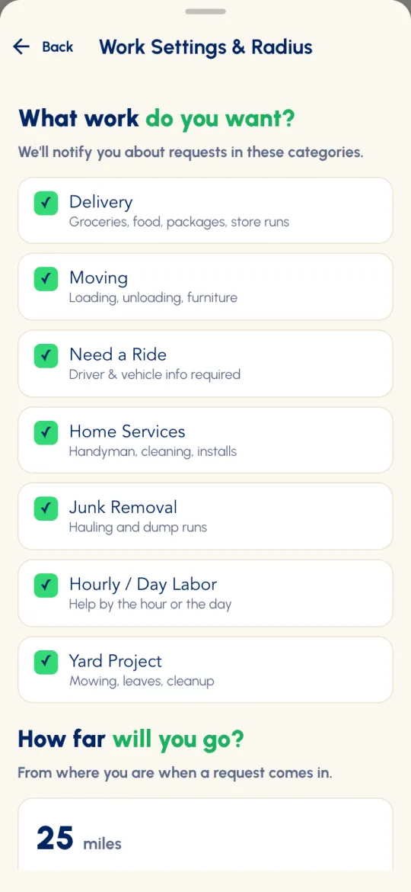
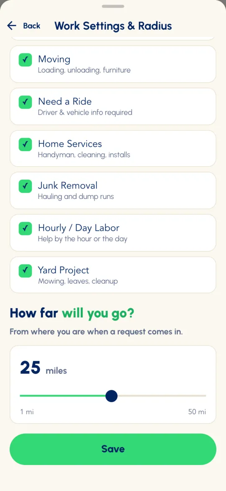
Know what you're looking at
Jobs you can take are on Home → Available, under Available near you, nearest first. Jobs where a customer picked you go to the top. Every card shows the essentials:
- A photo and the kind of work (like DELIVERY), with a short title.
- N mi away, and the timing with the time left, like Need ASAP · 38 min left.
- You earn and the amount, or Make an offer if the customer hasn't set a price.
Tap ▼ to open the card right there. You'll see the description, any special instructions, the route (street names only until you're hired), the pay broken down, the job's labels (see Step 2) and Open job.
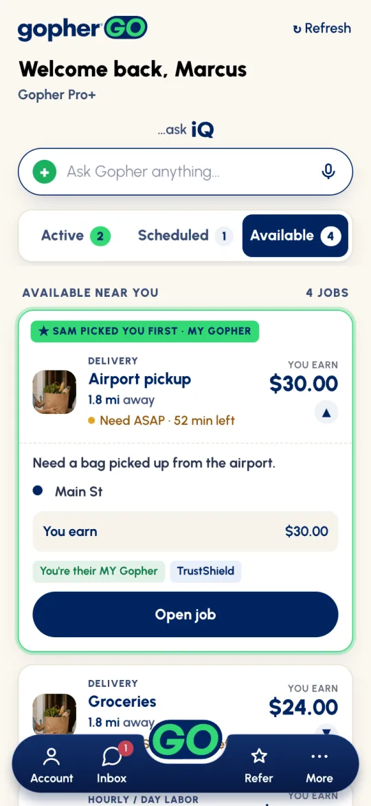
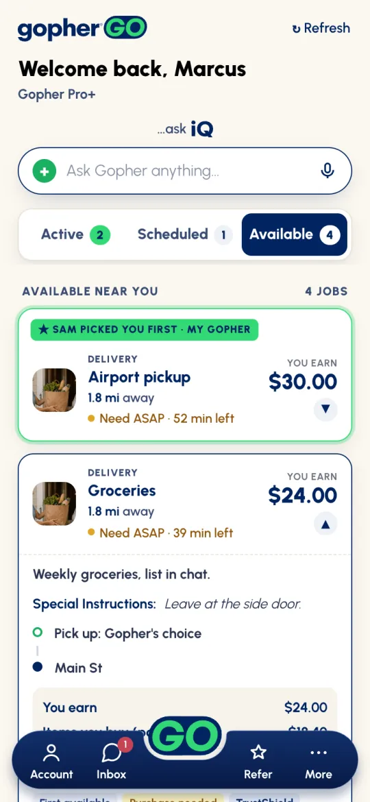
What the labels mean
An opened card and Request Details show labels that tell you what a job involves before you commit. The first one says how the customer chooses their worker:
Then, when they apply:
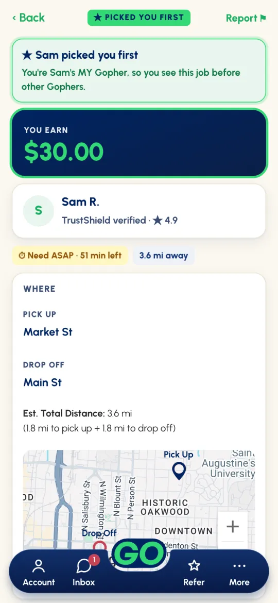
When does it need doing?
Every job has one of three timings. It decides what happens after you accept.
Once you accept a flexible or set-time job, it sits under Scheduled. There's no Start button: when you begin, tap In Progress. We send you a reminder an hour before, and if you never start the job, it starts itself at the set time (or at the end of a flexible window).
Understand exactly what you'll make
The number you pocket is always You earn. Gopher takes no cut and charges you no fees, so You earn $20.00 means $20.00 goes to your card.
Jobs with a purchase
When the customer needs you to buy something, the card adds what you'll spend, and the total is what's paid to you, in one payout:
Before you accept one, the app reminds you: You buy the items first. If you can't or don't want to, don't accept it.
Make an offer
Some customers don't set a price. Their cards say Make an offer, and they're asking workers to name their price. Open the job and tap Make an offer. Enter your Payment for your service (and the cost of items, where there are some), add a note if you like, tick the Offer & Cancellation Policy, and tap Send offer. The job then shows OFFER SENT until the customer decides, and you're told either way. Changed your mind? Cancel offer.
Crew and hourly jobs
On a crew job, the card shows the pay for the whole crew, like You earn $180.00 · crew of 3. Hourly jobs show the rate and the number of hours.
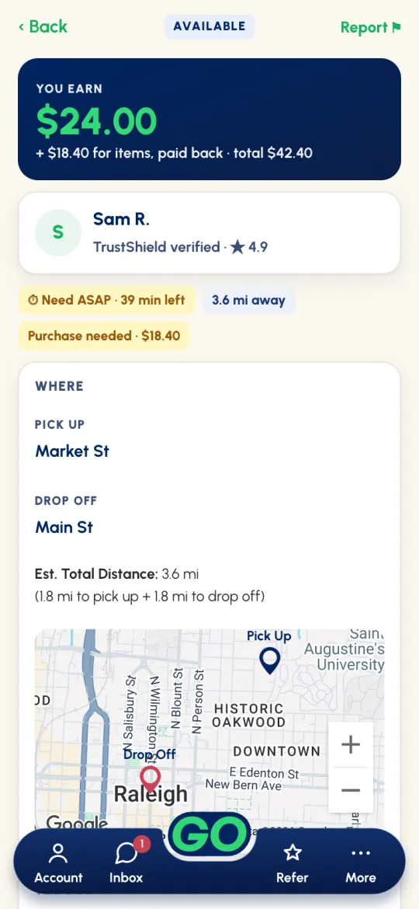
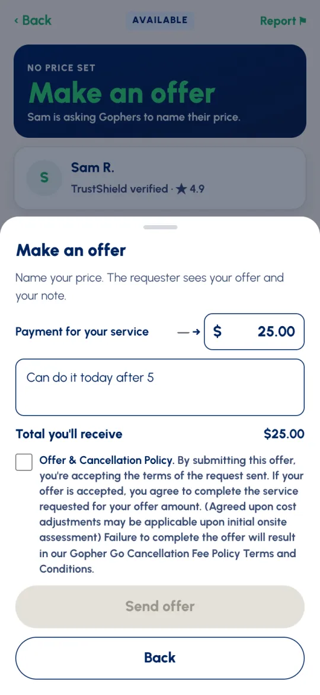
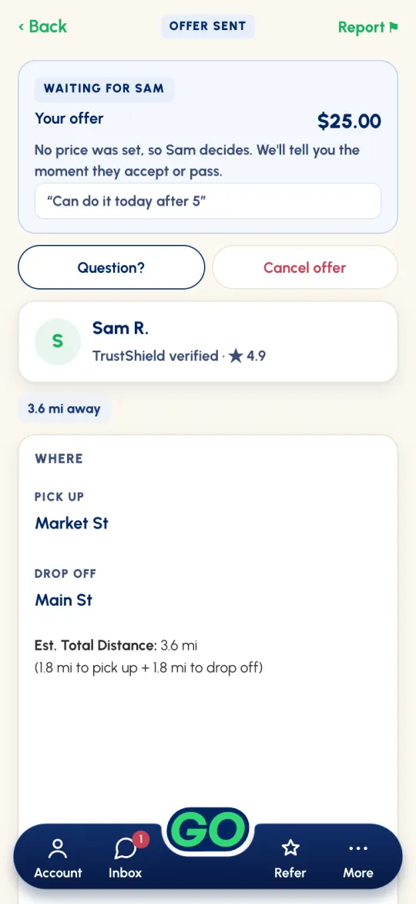
Decide and lock it in
Tap Open job for Request Details: what you'll earn, the customer (with their ★ rating and how many requests they've made), the labels, WHERE with a map, and THE JOB. Then choose:
- Accept Request. Tick I agree to the Cancellation Policy (and the Liability Waiver on Home Services, Moving, Junk Removal, Hourly / Day Labor and Yard Project), then tap Accept Request. On a First available job, or when you were picked first, you're hired. On I'll select my worker, you'll see YOU SAID YES while the customer chooses (Cancel acceptance takes it back).
- Question? Need more info first? Tap Question? to message the customer.
- Counter-offer. Want the job at a different amount? Tap Counter-offer, enter your new pay (and the new cost of items, where it can change), say why, tick the Counter-Offer & Cancellation Policy and tap Send counter-offer. The customer sees the old and new amounts side by side and accepts or declines. Keep it reasonable: a 3-mile, $5 trip might fairly counter to $10, not $30.
- Not interested. The job leaves your Available list for good.
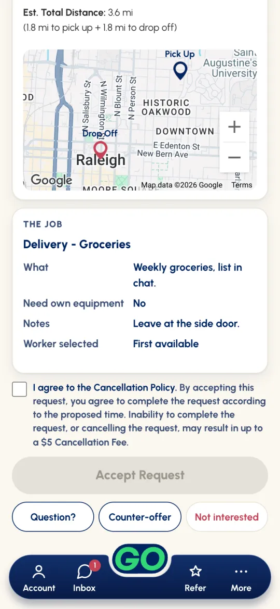
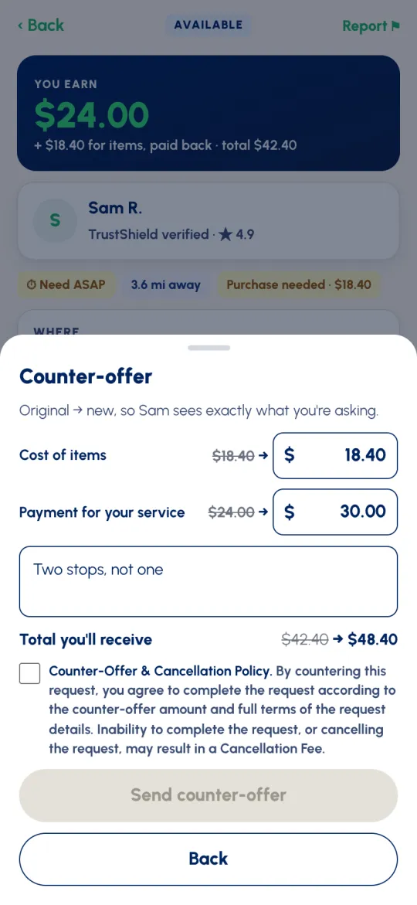
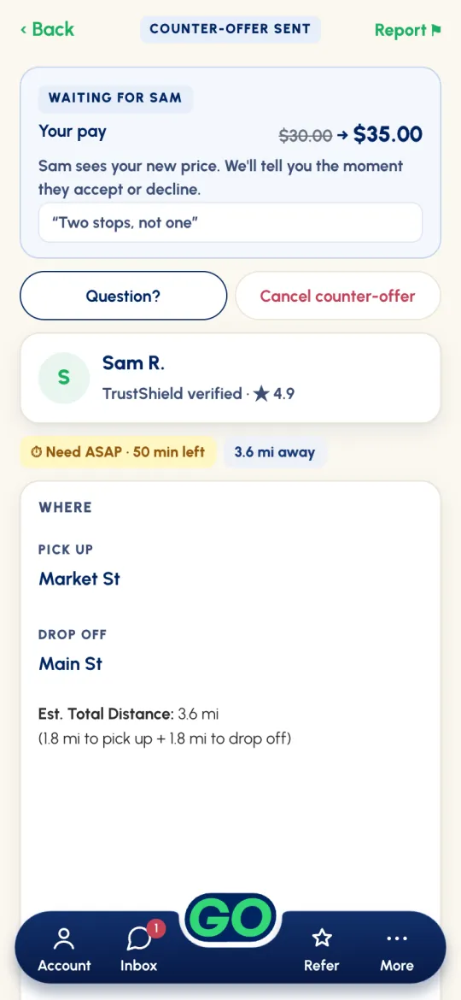
Tools while the job's active
Once you're hired, the job screen has everything you need, top to bottom:
- You earn, with any items paid back and the total.
- The customer, with Text (chat in the app) and Call. Send a quick intro message at the start of every job; "On my way!" goes a long way.
- The steps so far, and NEXT STEP with the green button to update it (see Step 7).
- Cost adjustment, if the price needs to change (see Cost adjustments).
- WHERE, with Directions to pick-up and Directions to drop-off (or Directions to the job). They open Apple Maps on iPhone and Google Maps on Android. If the pick-up says Gopher's choice, buy the items at any store that has them.
- THE JOB: when, what, the customer's notes and photos. At the bottom, Cancel job (see Cancelling).
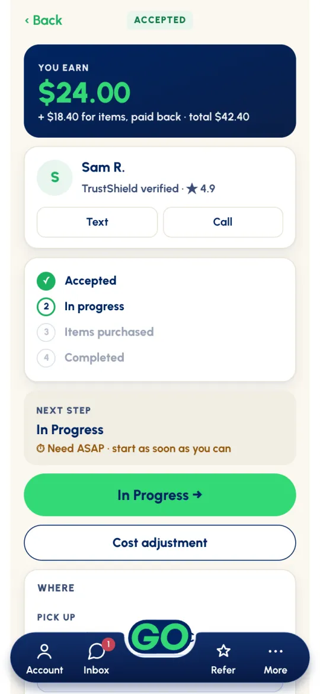
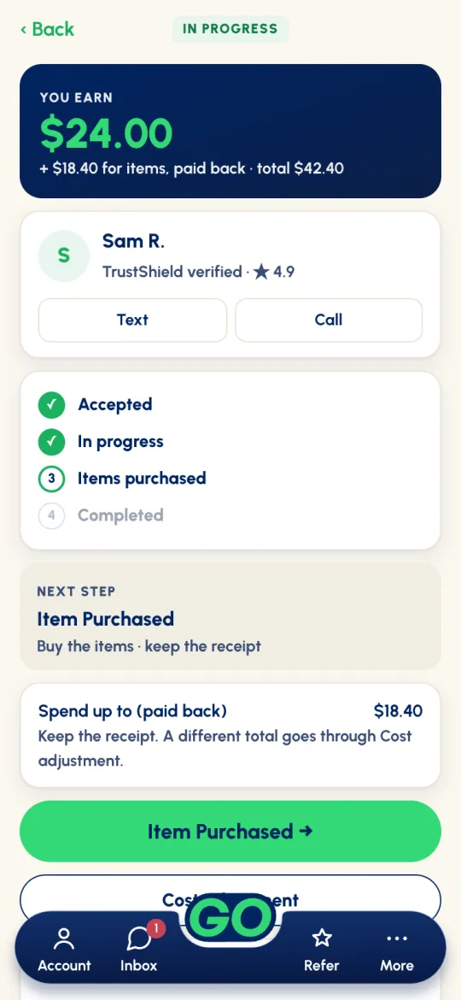
Update in real time → get paid
The big green button always shows the next step. Tap it at the right place and confirm. Every update is GPS- and time-stamped, so make each one where it happens.
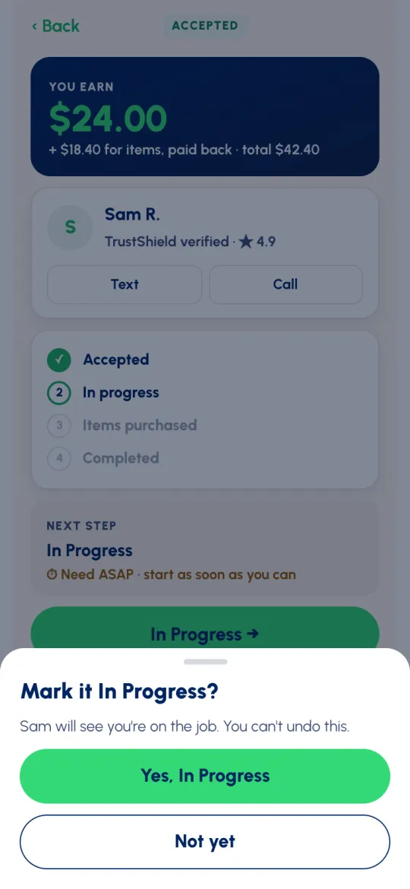
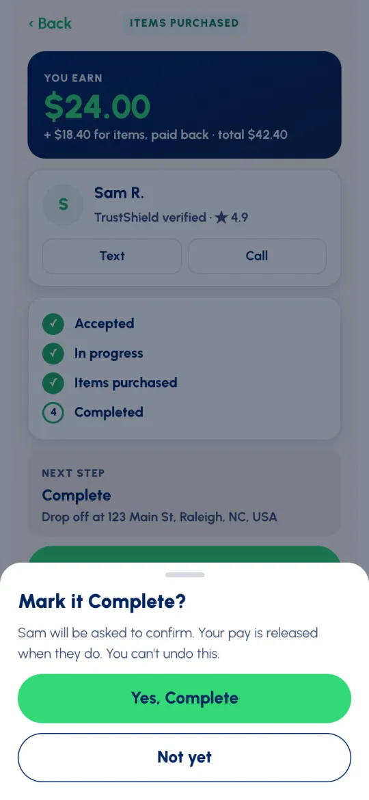
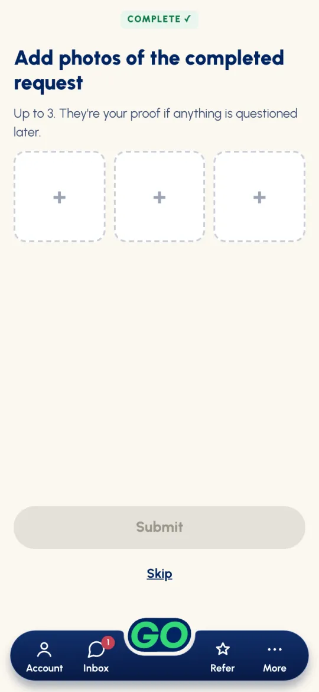
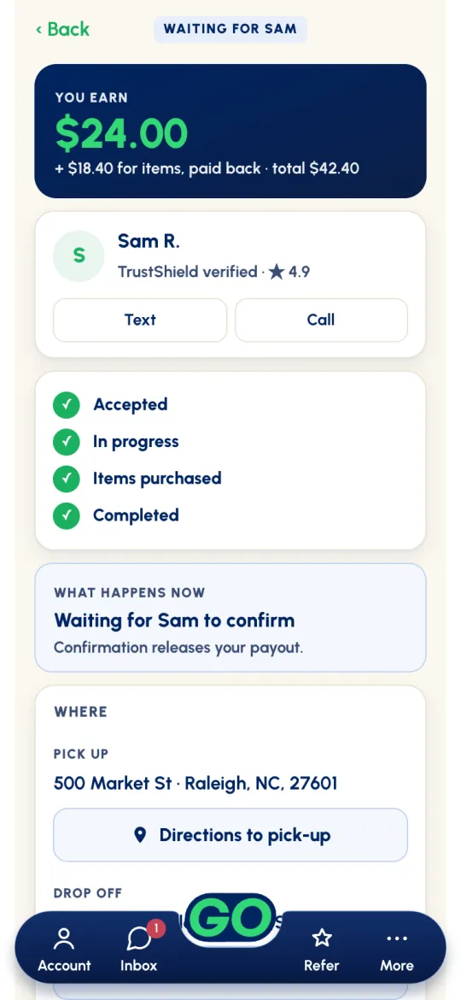
Payouts & speed
When the customer confirms the job (or it confirms itself after 48 hours), your pay and any items you bought go to your debit card together, in one payout, with no fee. You get a Payday!! notification when it's on its way. How fast it lands depends on where you are in your journey.
Your first 10 paid jobs
For your first 10 paid jobs, payouts arrive in about 2 hours after the customer confirms.
After that, or with Gopher Pro / Pro+
From then on, payouts are instant: about 1–2 minutes. Gopher Pro and Pro+ workers get instant payouts from their very first job.
Cost adjustments
Use a cost adjustment when the price needs to change: the items cost more or less than the customer's estimate, or the job turned out bigger or smaller. You can send one while you're on the job, up until you complete it (a scheduled job has to be started first), and after completion only if the customer opens a dispute.
- On the job screen, tap Cost adjustment. Change the price opens.
- Change the Cost of items, Your pay, or both. On hourly jobs you change the rate, the hours or the crew instead. The navy box shows the New total you'll receive.
- Pick why: Smaller job, Bigger job, Items cost more, Extra stop or Other, and add a note if it helps.
- Tap Send to Sam. If the items cost more, you'll add a photo of the receipt next.
While the customer decides, the job shows WAITING FOR SAM with the old and new amounts (Cancel change takes it back). You're notified when they approve or decline. You can't complete a job while a cost adjustment is waiting: the button reads Complete · after Sam approves.
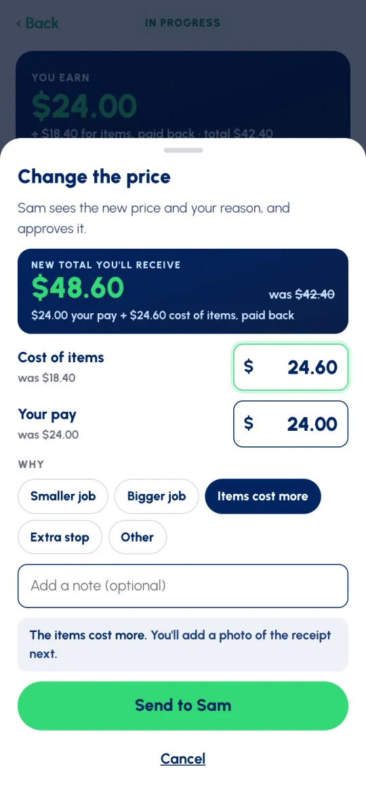
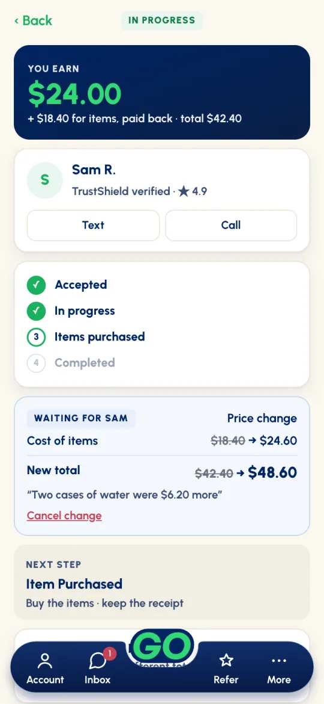
Example
The customer budgeted $18.40 for groceries that ring up at $24.60. Send a cost adjustment with the cost of items at $24.60, pick Items cost more and add the receipt. Done.
Best practices
- Item costs are never earnings. If the estimate is off by more than $1, over or under, adjust to the exact amount and add the receipt. Put yourself in the customer's shoes.
- Big jumps? Adjust before you buy. The customer's card is held for the total plus 20%. If the new total goes above that, the app says Additional authorization needed: don't buy the extra items until the customer approves and it's funded. If the new amount fails, the job goes back to the original amount.
- Going down? The app checks with you (Your pay goes down by…). Only send it if you and the customer agreed on it.
Age-restricted deliveries
For age-restricted items, the law and our policy are strict, and the customer agreed to these terms when they ordered. Only workers 21 and older see these jobs, and they're always handed over in person. Never leave them at the door.
Check the ID before you hand anything over
When you tap Complete, Check Sam's ID opens:
- Most customers: three quick checks. 1, take a photo of their ID. 2, confirm they were born on or before the date shown (21 or older today). 3, confirm the face matches the person.
- TrustShield customers: the app shows Verified by TrustShield · 21+ confirmed with the selfie and ID they have on file. Check the face matches the person and the name matches. No photo needed.
Then tap ID checked · Complete job.
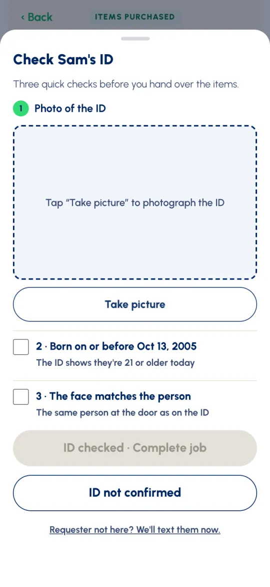
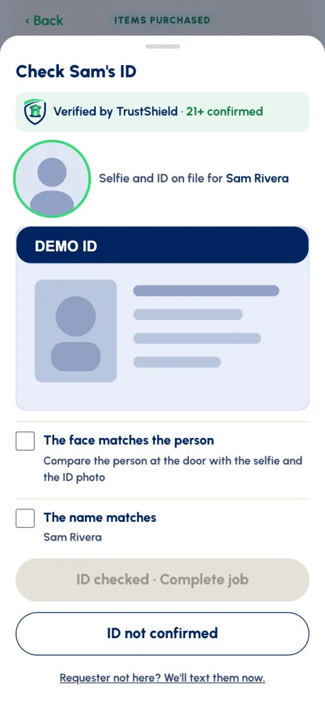
Customer not there?
You must be at the drop-off. Tap Requester not here? We'll text them now. to start a 10-minute timer. That tap texts, emails and notifies the customer, and GPS-stamps where you are, so the wait is on the record. If they're still not there when it runs out, tap Requestor No Show and leave with the items.
ID doesn't check out?
Tap ID not confirmed. You can complete it as Complete Request - No Delivery, go back and send a cost adjustment, or cancel the request; cancelling here never costs you a cancellation fee.
Something wrong? Disputes
A dispute is between you and your customer, and most get sorted out between the two of you. If a customer disputes a job you completed:
- You get a push notification and an email. On Home, the job shows DISPUTED · NEEDS YOU. Open it to see what the customer said.
- Message them and make it right. If the price needs to change, send a cost adjustment; it's available while the dispute is open.
- When they're happy, they confirm the job and you're paid as usual.
- Can't agree? Gopher support reviews it (the job shows UNDER REVIEW) and decides: you're paid the agreed amount, or the request is cancelled. You both get an email with the decision. You can also email support@gophergo.io any time.
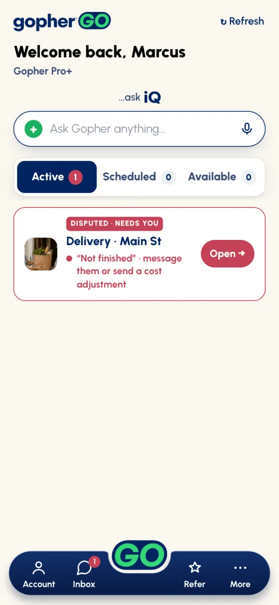
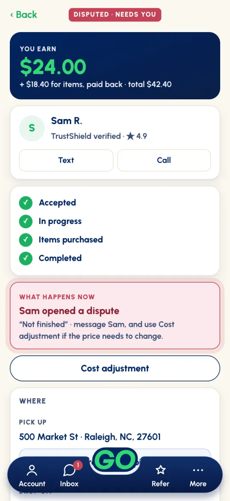
Rating & MY Gophers
When the customer confirms and your payout starts, the app asks you to rate them: tap the Gopher holes (one to five), add a comment if you like, and tap Done. Ratings keep the marketplace trustworthy both ways. Missed it? Open the job in Request History and tap Rate now →.
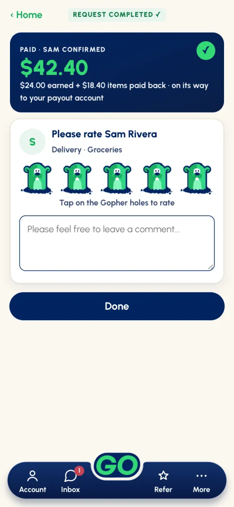
Becoming a MY Gopher
When customers rate you, they can add you as one of their MY Gophers. Then they can:
- Pick you first. When they post a job and choose you, you see it before other workers, with ★ PICKED YOU FIRST on the card (see Step 2).
- Recommend you. We invite them to recommend you to people they know.
Request History
Account → Request History lists your Completed and Cancelled jobs, with a search bar. Each card shows what you earned and where it stands: PAID, WAITING FOR SAM, PAYOUT ON HOLD, DISPUTED or DISPUTE RESOLVED.
Tap a job to see WHAT HAPPENED, step by step: Hired, In progress, Completed, Sam confirmed, Payout started, Payout sent. If it ever says Payout didn't go through · add a new debit card, replace your card in Payout Account.
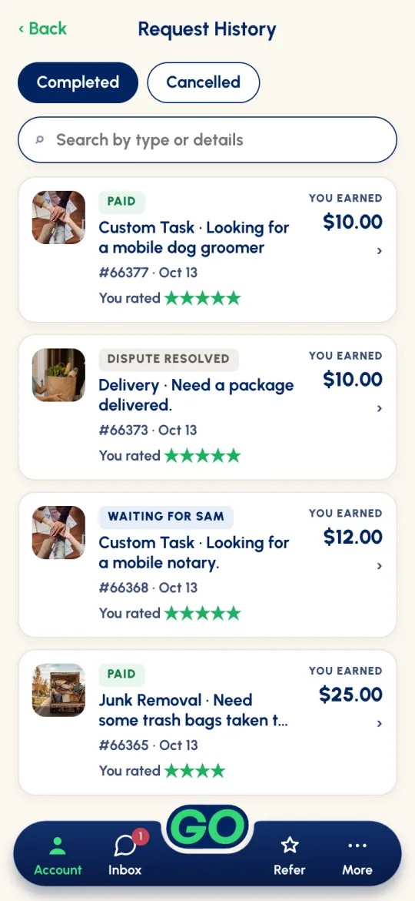
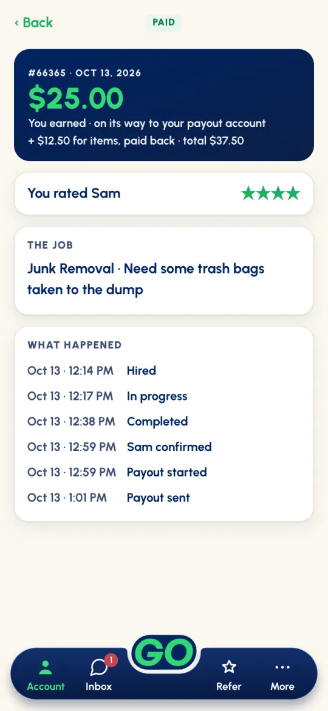
Gopher Pro & Pro+
Gopher Pro and Pro+ are optional tiers with a background check through Yardstik. Pass it once and you carry a badge on every job, so the customer requesting you has real assurance, and you get perks that help you earn more.
| What you get | No tier | Gopher Pro & Pro+ |
|---|---|---|
| Free to join, see jobs and accept them | ✓ | ✓ |
| Make offers and counter-offers | ✓ | ✓ |
| Instant payouts (about 1–2 minutes) | After 10 paid jobs | From your first job |
| Take more than one job at a time | — | ✓ |
| See new requests before workers without a tier | — | ✓ |
| A verified badge on your profile | — | ✓ |
Your work radius (1 to 50 miles) and the counter-offer cap are the same for every worker.
How to get it
Tap Account → Become A Gopher Pro (or, on Home's Active tab, Learn more about becoming a Gopher Pro here.). It opens our website, where you choose Pro or Pro+ and start the background check. Results usually take 1–3 days, then we add the badge and perks to your Gopher Go account. You'll see Gopher Pro Verified (or Pro+ Verified) on your Account.
Refer Gopher
Tap Refer on the bottom bar.
- Refer Yourself. Your QR code: new customers scan it and save you as their Gopher. Tap it to show it bigger. Your referral link is the same thing as a link; tap Copy link to paste it anywhere. Or tap Refer via SMS or Refer via email to send it.
- Refer Gopher Go invites a trusted local worker to earn on Gopher Go. Refer Gopher Request invites someone to post requests and hire workers. Type their numbers or emails, or tap Choose from my contacts, then send.
- Referral tracking shows who you've invited: Pending (invited), Added (signed up) and Active (completed their first job).
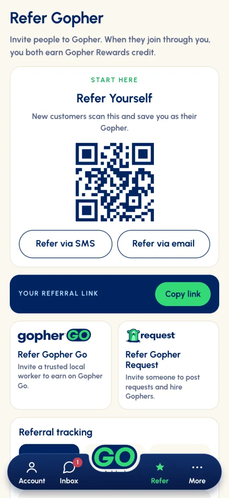
Cancelling & good standing
A few habits keep your account healthy and your earnings flowing.
If you have to back out of a job
- Cancel it, with a reason. On the job screen, tap Cancel job. Tell us what happened in your own words (at least 3 words). Your reason is shared with the customer, and it's what a reviewer reads. Then tap Cancel job, or Keep this job if you change your mind.
- The customer decides what's next. We tell them right away, and they choose whether to send the job to another worker or cancel it. You won't see it again.
- It's reviewed. Cancelling after you accept is reviewed. Repeated unexcused cancellations can carry a fee of up to $5 and can lead to removal. Emergencies are excused; that's what the reason is for.
- Support can take you off a job. If a job needs to go back out and you can't act, support can do it. You'll get a notification, You were removed from a request, if that happens.
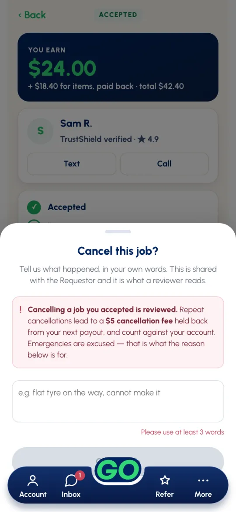
Avoid these cancellation reasons
- "Too far": the distance is shown before you accept. Check it.
- "Not enough money": the pay is clear from the start.
- "Didn't mean to accept": that's a lot of checkboxes to tick by accident.
- "Wasn't clear what to do": tap Question? before you accept.
Do this every time
- Update the job in real time, at the right location.
- Complete jobs promptly and professionally. Need ASAP jobs should be done within an hour unless you agree otherwise; food deliveries closer to 30 minutes.
- Be courteous, always.
Safety & the rules
- Truly independent. You're not a Gopher employee: you work for the customer. We just make sure they pay you on time.
- Keep messages in the app. Before you're hired, don't share phone numbers, emails or other contact details; the app hides them. Once you're hired, you can call or text your customer. Paying, or arranging to pay, outside Gopher is never allowed, before or after you're hired.
- The app checks your messages before they send. If a message breaks these rules, the app asks you to remove the details. If you send it anyway, it's flagged, and the conversation is blocked while our team reviews it.
- Only take what you can do well. Don't accept jobs outside your skills or your age eligibility.
Help & your account
You're ready to earn! For anything else:
- Ask Gopher iQ. On Home, tap Ask Gopher anything…. You'll see common questions, and answers appear as you type. You can also use your keyboard's microphone to say it. Didn't find it? Tap Open the Help Center →.
- More → Help Center has three buttons: Gopher Go Tutorial, FAQs, and Message Support to chat with our team.
- Email us at support@gophergo.io.
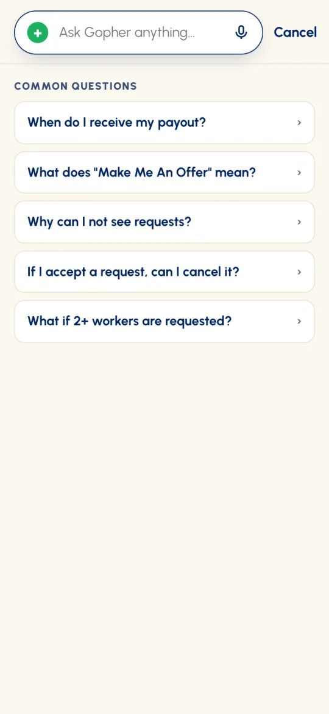
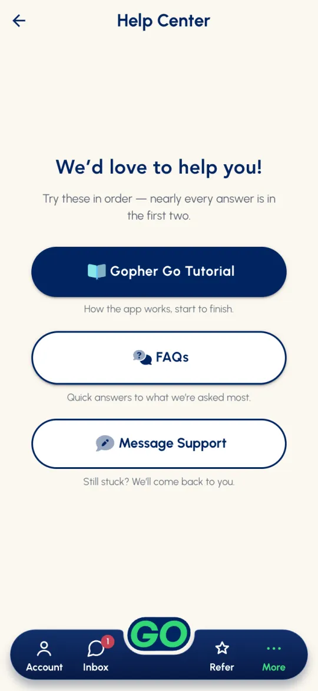
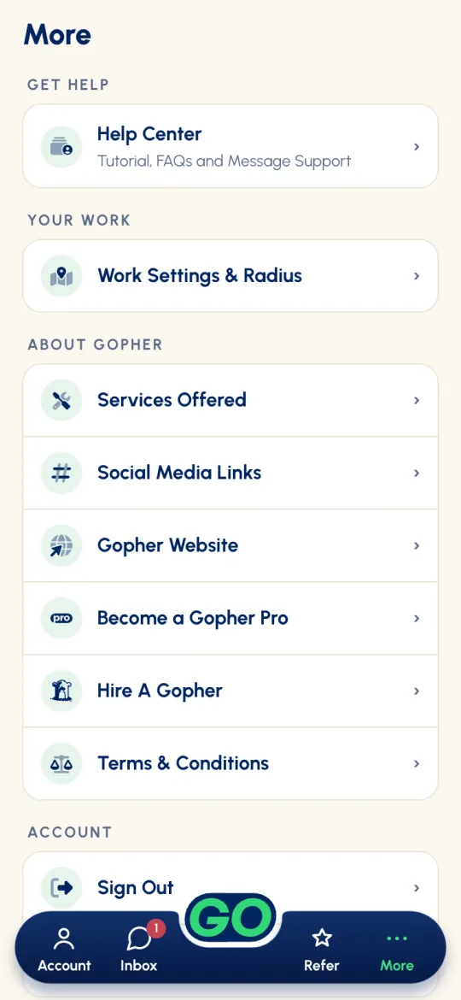
Your account
More also has Sign Out and Delete Account. Deleting your account is permanent and happens straight away: it erases your history. If you just need a break, sign out instead.
Now get in the game — go Gopher it!